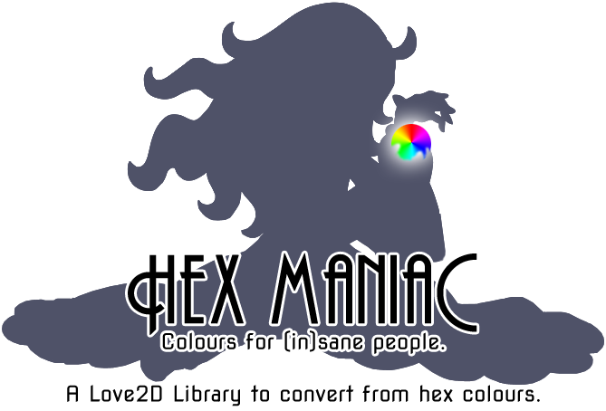
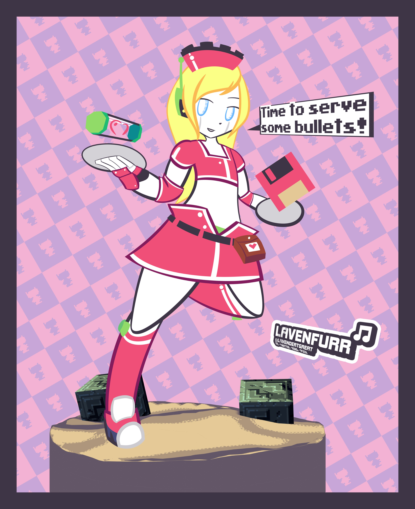
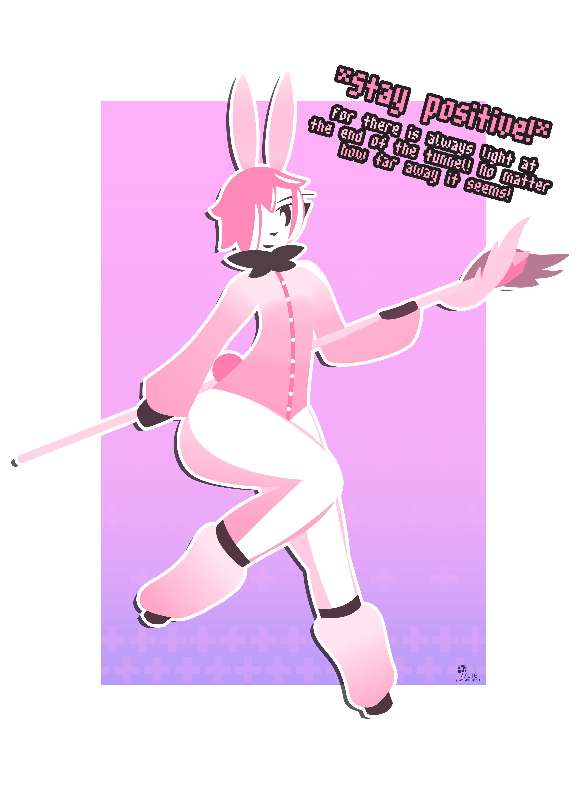
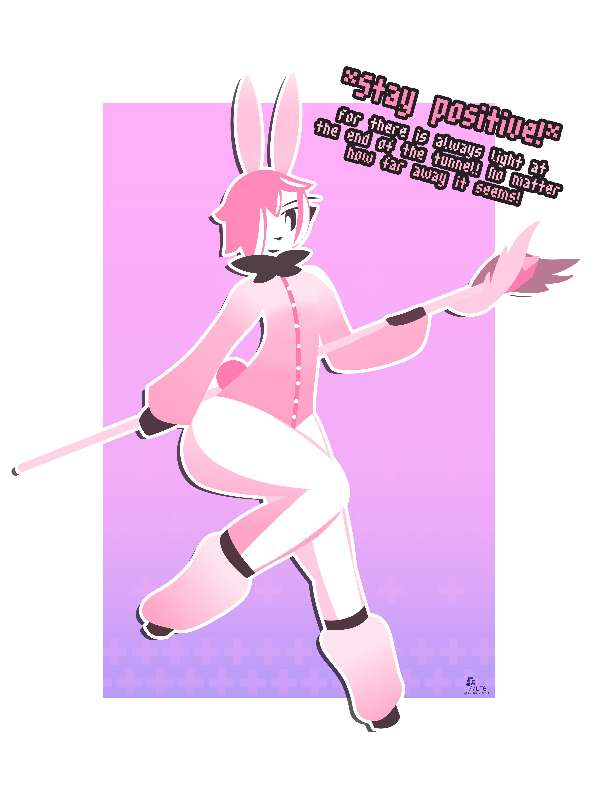
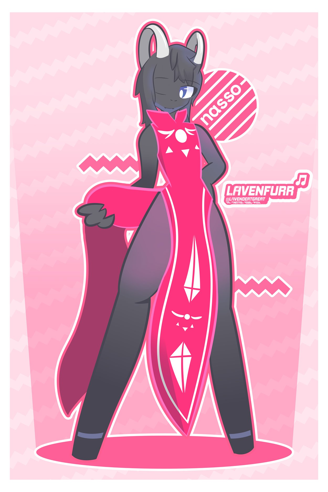
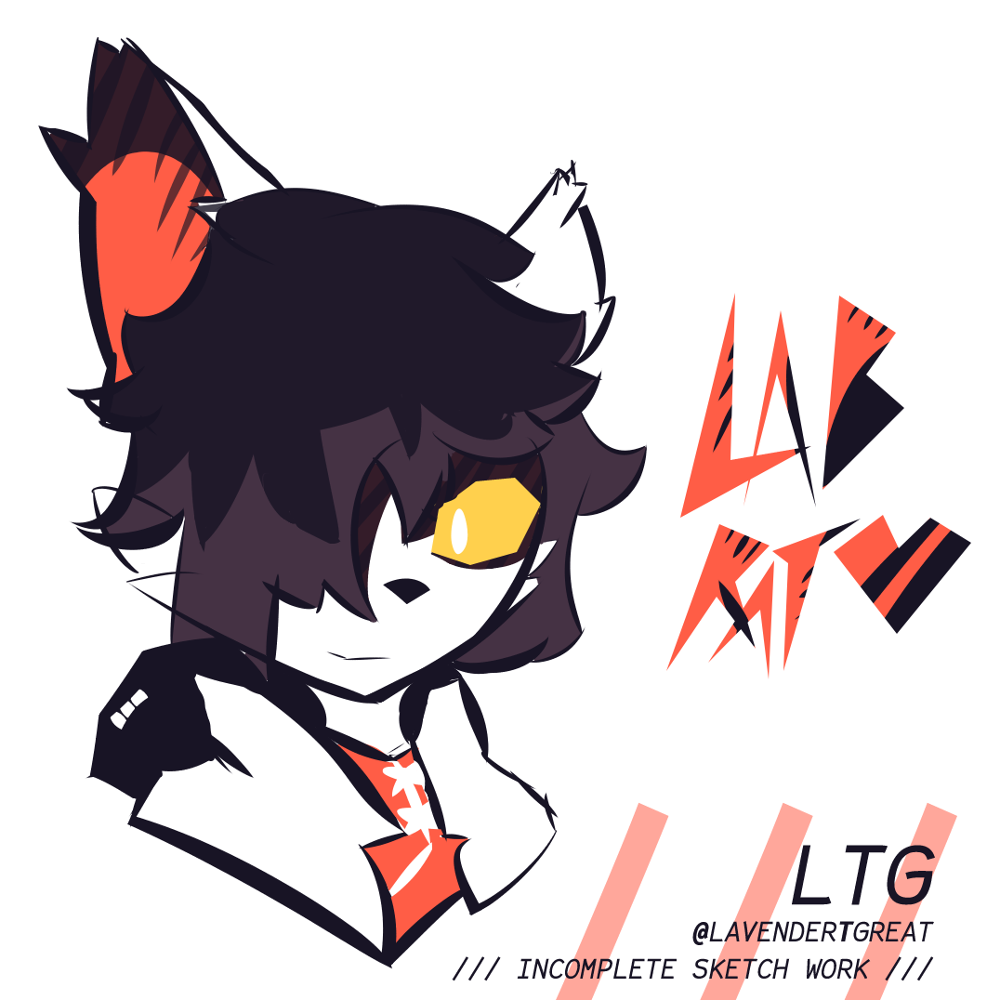
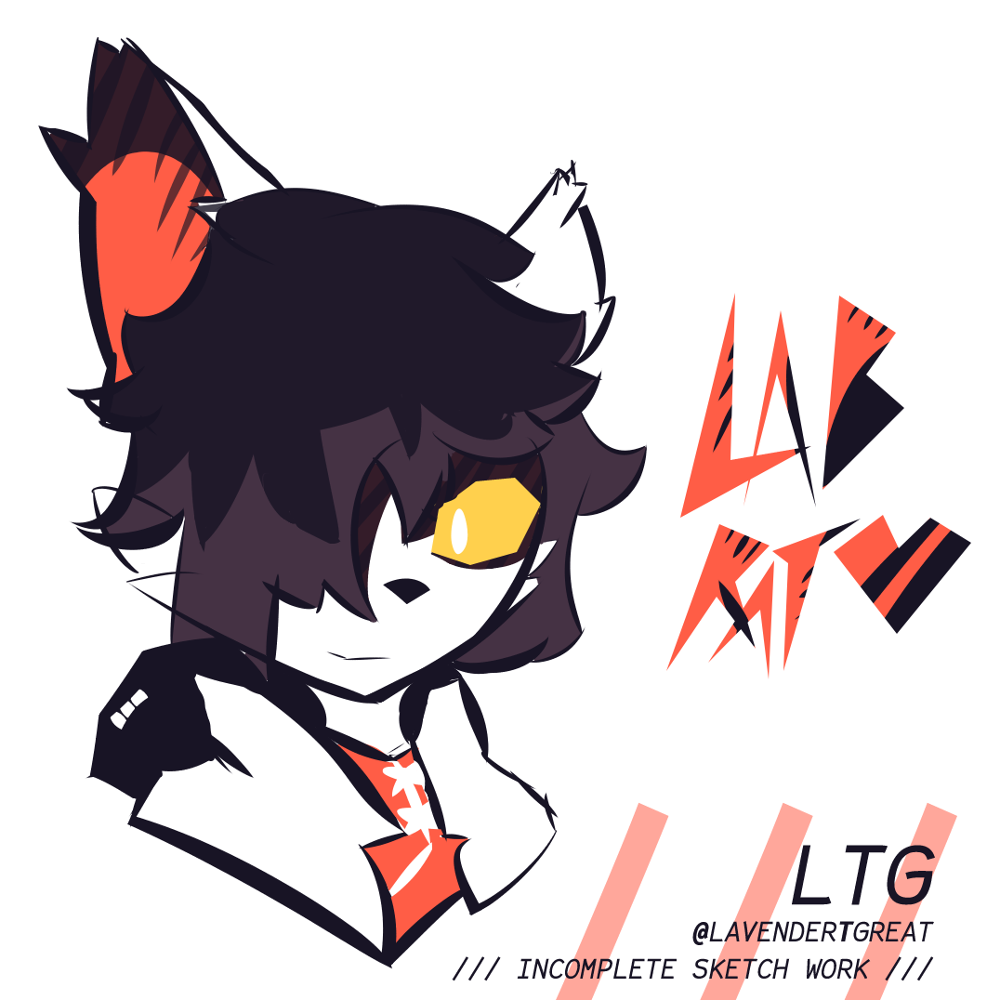
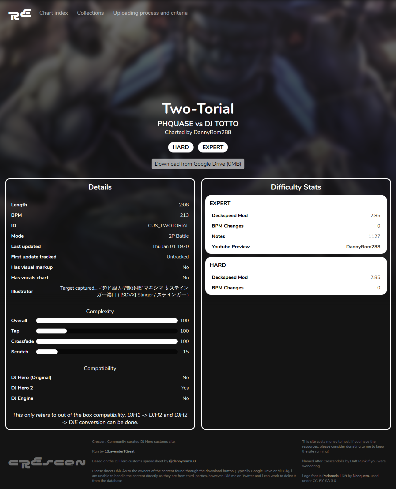
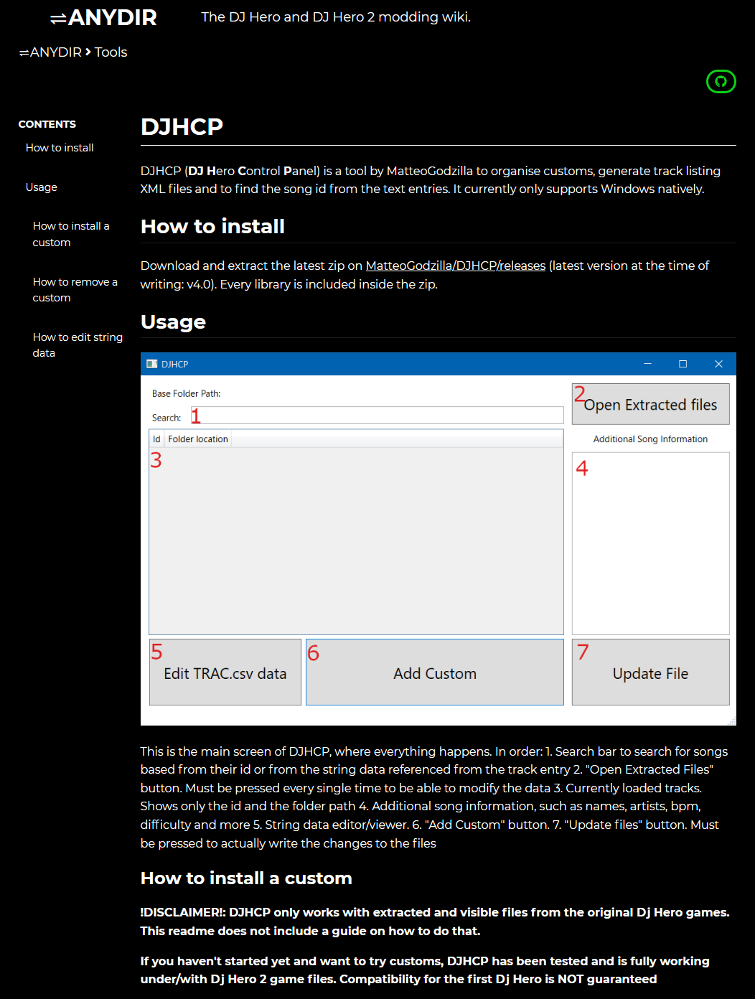
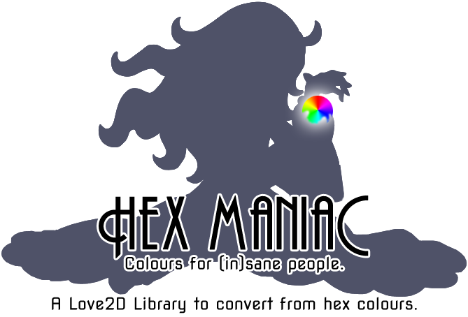

Lavenfurr
Programming and art (Or something)
I'm a web developer that focuses on minimalism and elegance. Every piece of code I write is designed to be functional with as minimal dependencies as possible.
In my spare time when I'm not designing or programming websites, I'm coding micro size libraries for the game framework LOVE, writing extensive detailed documentation or creating art of exotic, unusual varieties!
Twitter
Programming
Github

dosHUD is a custom HUD for the game Team Fortress 2, MIT licensed. Uses Valve RES format. Available at LavenderTheGreat/dosHUD 
Hex Maniac is a minimalist and simple library for using hex colours in the LOVE framework. Licensed under the Unlicense. Uses Lua. Available at LavenderTheGreat/hexmaniac

Emerl is a work-in-progress tool kit for Sonic Battle (US) on the Game Boy Advance. Soon to be MIT licensed. Uses Deno JS. Available at sbhax/Emerl
SpecialZone is a simple, lightweight state manager for Lua under the MIT License. Uses Lua. Available at LavenderTheGreat/specialzone▽
HeroPatch is a basic adjustment tool for DJ Hero 2 for quality of life features. MIT licensed. Uses HTML, CSS and JS. Available at LavenderTheGreat/HPatch
Built with Chota.css (LICENSE) and Google Fonts, plus a ton of effort!
In my spare time when I'm not designing or programming websites, I'm coding micro size libraries for the game framework LOVE, writing extensive detailed documentation or creating art of exotic, unusual varieties!
Welcome to the Special Zone!
Live examples of my work
HPatch
A patcher for the game DJ Hero 2 to enable hidden features.
A patcher for the game DJ Hero 2 to enable hidden features.
⇌ANYDIR
⇌ANYDIR is a slowly growing and developing archive of content pertaining to modding DJ Hero 2.
⇌ANYDIR is a slowly growing and developing archive of content pertaining to modding DJ Hero 2.
Where to find me
ArtProgramming
Github
Examples of my work
Art - Web Design - Open Source - Other
Art

Maid Day Curly Brace

Furious Positivity Warrior
* Stay Postitive! *
Maid Day Curly Brace

Furious Positivity Warrior
* Stay Postitive! *

Nasso

Aak
/// Incomplete Sketch Work ///
Nasso

Aak
/// Incomplete Sketch Work ///
Web Design

Crescen
Crescen

ANYDIR.github.io
ANYDIR.github.io
Open Source Projects
dosHUD is a custom HUD for the game Team Fortress 2, MIT licensed. Uses Valve RES format. Available at LavenderTheGreat/dosHUD 
Hex Maniac is a minimalist and simple library for using hex colours in the LOVE framework. Licensed under the Unlicense. Uses Lua. Available at LavenderTheGreat/hexmaniac
BLACK or WHITE
BLACK or WHITE is a Firefox/Chrome extension that adds additional filters to SpinShare. Uses JS. Available at LavenderTheGreat/BLACKorWHITE⇌ANYDIR
⇌ANYDIR is a documentation site for DJ Hero 2 modding. Soon to be MIT licensed. Uses JS, Python, HTML and CSS. Available at ANYDIR/Emerl is a work-in-progress tool kit for Sonic Battle (US) on the Game Boy Advance. Soon to be MIT licensed. Uses Deno JS. Available at sbhax/Emerl
BunnySuit
BunnySuit is an advanced patching tool for Sonic Battle (US) for patching game pointers. Soon to be MIT licensed. Uses Deno JS. Available at LavenderTheGreat/BunnySuitSpecialZone is a simple, lightweight state manager for Lua under the MIT License. Uses Lua. Available at LavenderTheGreat/specialzone
▽
H-Patch
HeroPatch is a basic adjustment tool for DJ Hero 2 for quality of life features. MIT licensed. Uses HTML, CSS and JS. Available at LavenderTheGreat/HPatch
Other open source projects
- Documentation
Writing documentation is a hobby of mine and I've written a fair few bits of documentation and similar for community projects.
-
FSGMUB/XMK Documentation
Documentation for the rhythm game chart format used by DJ Hero 2 and DJ Hero 1. anydir/formats/official/xmkandfsgmub.md -
SRTB Documentation
Documentation for the rhythm game chart format used by Spin Rhythm XD, still mostly relevant but has fallen behind. LavenderTheGreat/SRTBDocs.md -
DJ Hero community format Documentation
Documentation for the community format used for DJ Hero chart metadata. Originally proposed by MatteoGodzilla, documented by myself. MatteoGodzilla/djhsongjson
-
FSGMUB/XMK Documentation
- Minor contributions
Repositories I have contributed to but not in a major fashion.
-
Metastream
Video viewer a la Watch Together, did some things relating to meta for the extension. samuelmaddock/metastream
-
Metastream
Built with Chota.css (LICENSE) and Google Fonts, plus a ton of effort!